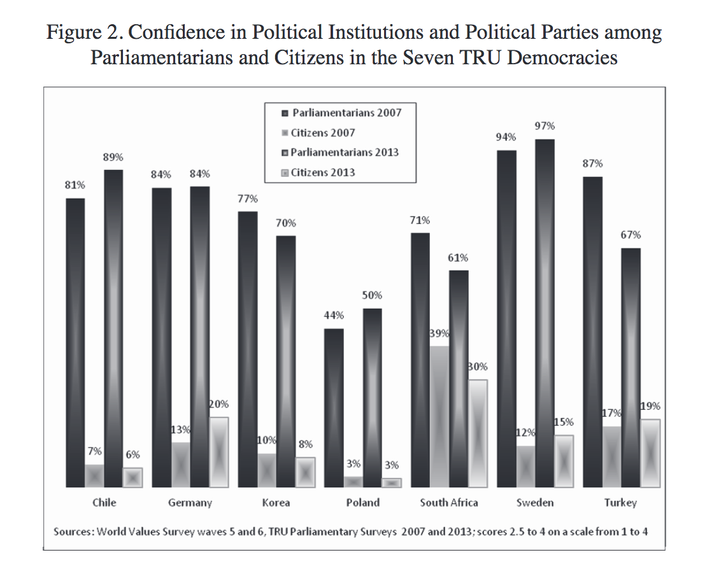

Making Space for Endurance
Letter 7: Fighting Ignorance
This is the first two sections of the 7th installment of my weekly newsletter Making Space for Notes. Normally I do not post the letters here because it is meant to be more of a rough draft than what I prefer to be published here, and the section that I have left out of this version is a random collection of links I found throughout the week that I found interesting. The letter goes out between Friday and Sunday of every week—depending on how much research time I have during the week.
[Permalink]Hello friend,
[Permalink]One thing I spend a lot of time thinking about is building institutions that outlive the founders and how to build in checks into the system that prevent violent self-destruction. (Yes, healthy self-destruction is a real thing that deserves serious consideration but we’ll leave that for a later conversation.)
[Permalink]As a high school student, friends and I ran the largest recurring LAN party (remember those?) in the Portland area. We’d have about 50 people gather in a hotel conference room every couple of months with team competitions with sponsored prizes. One thing I often thought about was how to make sure it continued for people after I left for college, since I was the one doing a lot of the organizing and planning. Sadly, after I left, the group broke up without running any more events even though they had a whole summer before anyone else went off to college.
[Permalink]As a college student I was absolutely hellbent on understanding how to create societies that would protect themselves from the worst possibilities: dictatorships, oligarchy, mobs. Or from self-destruction: Rome growing so rich and self-important that they were socially and economically unsustainable and collapsed. I think about how even though the western world fell into dark times, it was able to eventually recover because they hadn’t also fundamentally collapsed the world’s ecosystem—while we may not be so lucky.
[Permalink]And this form of thinking has shaped how I work and my research interests after school. When I start a new project at work, I document everything so others can take over. I explicitly tell people that if I do my job correctly, I make myself redundant because I’ve taught others the skills needed to do my work and the processes will make sure my successors will not only be able to pick up where I left off but also continue the processes of self-improvement.
[Permalink]And that is the really hard part because making a thing to outlast us is simple. A solid snowman will continue standing after the child is done building it, but it will not survive the weather. Sunlight melts it. Rain, sleet, and wind will deform it. The hard part is making a thing that not only outlasts our attention but will continue to adapt and evolve as the world changes around it.
[Permalink]I am reminded of a design problem: How do you build a system of warnings for a spent nuclear fuel repository that will last the tens of thousands of years? it takes for the radioactive decay to become safe again? We’ve never had human knowledge last that long before. Societies and governments grow and collapse in that time. No known human language is that old. The field of nuclear semiotics is entirely dedicated to making messages that people in the future will hopefully still understand. But then there is also the problem of how to build signs that will last that long. That won’t be stolen, taken as scrap, or otherwise lost to decay and weathering.
[Permalink]Or a conversation closer to home: the Federalist Papers. With talk of the Electoral College and foreign interference in Presidential elections, Federal 68 is coming back to new relevance this week, I’ll include the two key grafs in full. First, ¶5 on its role of protecting the US from foreign interference and corrupt demagogues:
[Permalink][Permalink]Nothing was more to be desired than that every practicable obstacle should be opposed to cabal, intrigue, and corruption. These most deadly adversaries of republican government might naturally have been expected to make their approaches from more than one querter, but chiefly from the desire in foreign powers to gain an improper ascendant in our councils. How could they better gratify this, than by raising a creature of their own to the chief magistracy of the Union? But the convention have guarded against all danger of this sort, with the most provident and judicious attention. They have not made the appointment of the President to depend on any preexisting bodies of men, who might be tampered with beforehand to prostitute their votes; but they have referred it in the first instance to an immediate act of the people of America, to be exerted in the choice of persons for the temporary and sole purpose of making the appointment. And they have excluded from eligibility to this trust, all those who from situation might be suspected of too great devotion to the President in office. No senator, representative, or other person holding a place of trust or profit under the United States, can be of the numbers of the electors. Thus without corrupting the body of the people, the immediate agents in the election will at least enter upon the task free from any sinister bias. Their transient existence, and their detached situation, already taken notice of, afford a satisfactory prospect of their continuing so, to the conclusion of it. The business of corruption, when it is to embrace so considerable a number of men, requires time as well as means. Nor would it be found easy suddenly to embark them, dispersed as they would be over thirteen States, in any combinations founded upon motives, which though they could not properly be denominated corrupt, might yet be of a nature to mislead them from their duty.
…and ¶7 on how they are apportioned:
[Permalink][Permalink]All these advantages will happily combine in the plan devised by the convention; which is, that the people of each State shall choose a number of persons as electors, equal to the number of senators and representatives of such State in the national government, who shall assemble within the State, and vote for some fit person as President. Their votes, thus given, are to be transmitted to the seat of the national government, and the person who may happen to have a majority of the whole number of votes will be the President. But as a majority of the votes might not always happen to centre in one man, and as it might be unsafe to permit less than a majority to be conclusive, it is provided that, in such a contingency, the House of Representatives shall select out of the candidates who shall have the five highest number of votes, the man who in their opinion may be best qualified for the office.
As someone who studies the longevity of systems, these two paragraphs say so much to me. Reading between the lines of the second paragraph, we see a compromise for immediate political expediency: small states—which were slave states—are granted a slightly louder voice. But in the first paragraph we see an attempt to set up 11th-hour checks to protect against disaster, both important parts to forming the Electoral College. And as a skilled rhetorician, Hamilton (who wrote this letter), put them in this order to also note which he thought was the more important consideration: the Electoral College is intentionally a long-term check to fight intrigue and corruption.
[Permalink]The founders was working on the same problem I am: How do we build systems that stay healthy long after we are gone? And how do we do it in the immediate political climate?
[Permalink]The problem is that in every attempt I’ve seen, the circumstances that lead to a crisis of the system also renders ineffectual all the checks that were supposed to prevent it: Doubt over the legitimacy of the Electoral College. Doubt over the value of the Press. Trust that national welfare will outweigh political self-interest in legislator’s decision making. The founders hoped that they could create mechanisms in government that would create a more stable system, and in times of immediate crisis, trust in systemic inertia will hold us over for a little while—like a backup generator for a hospital. But when trust in the system itself eventually breaks down and we don’t restore our trust in each other, the system starts failing as that generator starts running out of fuel, or as fails because we realize it has been left in a state of horrible disrepair.
[Permalink]I strongly suspect the smarter of the founders knew all of this. Jefferson—problematic man as he was—did, I think about the broader context of the “tree of liberty” quotation from his letter to William Stephens Smith that the militia people love so much (emphasis mine):
[Permalink][Permalink]I do not know whether it is to yourself or Mr. Adams I am to give my thanks for the copy of the new constitution. I beg leave through you to place them where due. It will be yet three weeks before I shall receive them from America. There are very good articles in it: and very bad. I do not know which preponderate. What we have lately read in the history of Holland, in the chapter on the Stadtholder, would have sufficed to set me against a Chief magistrate eligible for a long duration, if I had ever been disposed towards one: and what we have always read of the elections of Polish kings should have forever excluded the idea of one continuable for life. Wonderful is the effect of impudent and persevering lying. The British ministry have so long hired their gazetteers to repeat and model into every form lies about our being in anarchy, that the world has at length believed them, the English nation has believed them, the ministers themselves have come to believe them, and what is more wonderful, we have believed them ourselves. Yet where does this anarchy exist? Where did it ever exist, except in the single instance of Massachusets? And can history produce an instance of a rebellion so honourably conducted? I say nothing of it's motives. They were founded in ignorance, not wickedness. God forbid we should ever be 20. years without such a rebellion. The people can not be all, and always, well informed. The part which is wrong will be discontented in proportion to the importance of the facts they misconceive. If they remain quiet under such misconceptions it is a lethargy, the forerunner of death to the public liberty. We have had 13. states independant 11. years. There has been one rebellion. That comes to one rebellion in a century and a half for each state. What country ever existed a century and a half without a rebellion? And what country can preserve it's liberties if their rulers are not warned from time to time that their people preserve the spirit of resistance? Let them take arms. The remedy is to set them right as to facts, pardon and pacify them. What signify a few lives lost in a century or two? The tree of liberty must be refreshed from time to time with the blood of patriots and tyrants. It is it's natural manure. Our Convention has been too much impressed by the insurrection of Massachusets: and in the spur of the moment they are setting up a kite to keep the hen yard in order. I hope in god this article will be rectified before the new constitution is accepted.
Tyranny always perpetuates lies. Ignorance is complacency. Ignorance is anathema to democracy and healthy society. The only way to fight that is through popular education and truth. But it is neigh impossible to guarantee everyone will always be able to be well-informed.
[Permalink]But we have a major leader whose very work these days seems to do nothing but spreading ignorance to disguise his machinations. Rising to power partially on the back of a major political party who have been using a lesser version of that playbook for decades—even if unwittingly.
[Permalink]Normative Connections
[Permalink]So I think about ignorance—which we often think of as a lack of knowledge—but as I talk to friends I’m starting to understand ignorance as a psuedo-system in of itself. One whose mechanisms are from outside factors, but end up all being self-perpetuating.
[Permalink]My friends reminds me of Coming to Understand: Orgasm and the Epistemology of Ignorance (PDF) which goes through the history of scholarship around female genitalia and orgasm to show how Christian standards of purity and monogamy kept researchers not only ignorant of female orgasms (in humans and primates), but also of the prevalence of same-sex…well…sex in nature, and the likelihood that humans evolved as polyamorous creatures. To refer back to Letter 5, the frameworks we use to see the world shape how we view the evidence in front of us. Sex researchers and animal researchers were embedded in a framework of female purity so they didn’t see that female primates had orgasms. They were so embedded in a worldview of male dominance that they saw female sex organs as undeveloped penises rather than its own branch of organ development.
[Permalink]I think about research in political psychology and how—especially for politically-charged information trying to correct false knowledge makes us believe it more. How our ignorance makes us ignorant of our how little we know (which we now commonly call the Dunning-Kruger effect because of this very paper). And how our political ideology even makes it hard for us to do math when it is around a politically-charged topic (yeah, that was two separate articles, not just one). How when we see people suffering under inequality we are often more likely to blame them than confront the truth the the world is unjust (though not in all cases). And when we are uncomfortable because we feel uninformed about these things we are more likely to avoid it than educate ourselves.
[Permalink]I reread this piece from a journalist that writes for pay-walled policy magazines on how the structure of how journalism is performed and paid for shapes what important stories are lost in reporters’ notes because we don’t have the space to tell them or the funding to do the research.
[Permalink]I think about the fact that as unemployment in the US drops below 5%, we are reaching full employment, and yet people are feeling more economic insecurity. I think of the reasons that this is so: that a lot of folks are perpetually underemployed, that media coverage and political dialog constantly puts us in a world of fear. That our metrics for economic well-being are crap. And I read an article on Impact of the Great Recession on Support for Democracy (PDF from the Taiwan Journal of Democracy)
[Permalink][Permalink][A] decline in support, indeed, was considerable in fragile democracies, regardless of the impact of the recession in those countries. This result supports the notion that it is not so much the actual decline in standards of living and the rise in unemployment in one's own country that contributes to the decrease in support for democracy, as the perception of its potential threat to the standards of living. This confirms the results of electoral research that have shown the importance of sociotropic voting (i.e., that electoral choice depends more strongly on the perception of the general economic situation than on the economic situation of one’s own household.
As news of Obama’s unwillingness to publicly talk about Russian interference in US elections in September, I also found this chart rather illuminating:
[Permalink]Obama—for all his faults—has always trusted the system, he has trusted Republicans to not only play by the established rules of US democracy, but by its mores and culture as well. That they cared more about the union than ideology. And he does so because he believes in it and because from his vantage point the system is operating just as the rules intended: of course Congress is going to challenge the president, that’s the checks and balances working. But systems are easily dismantled from the inside. There are always ways to play by the rules to destroy the system. Because the system is more than just the rules. And once you start going against the spirit of the system and the trust and respect in working together, no rules or checks and balances will ever fix it. The only way to fight that is by fighting the systems of ignorance that feed them. By creating spaces where we can learn political skills, and I don’t just mean how to run campaigns or lobby, but spaces where we learn to build civic relationships. We need to learn to understand each other and this has to start early. This goes far beyond STEM or even STEAM education, it needs to be deeply embedded into how we teach.